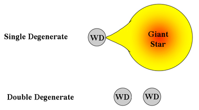

Although the exact explosion mechanism for Type Ia supernovae (SNIa) is still undetermined, and no progenitor system has ever been directly observed, astronomers agree that the data are best fit by an explosion of a white dwarf that has exceeded its Chandrasekhar limit through interaction with a companion. The nature of this companion is still uncertain, but astronomers have promoted two main models:

In the double-degenerate model, the white dwarf merges with another carbon-oxygen white dwarf companion to exceed the Chandrasekhar limit. In this scenario we would not expect to observe hydrogen in the spectra of SNIa since both objects involved would have long ago used up their hydrogen reserves.
In the single-degenerate model, the white dwarf accretes matter from a giant companion. In this case it is not unreasonable to expect hydrogen-rich material to exist around the white dwarf, and we should expect to see hydrogen in the spectra of SNIa.
Until very recently, no hydrogen had ever been detected in the spectra of SNIa. This changed with the discovery of SN 2002ic. Clearly a Type Ia when first classified, its spectrum matched those of other SNIa in all respects but one – there was a weak Hα line present! This Type Ia spectrum evolved over a period of several weeks with the Hα emission becoming more and more dominant, to ultimately look exactly the same as a luminous Type IIn supernova. This discovery suggests that at least some SNIa are the result of accretion from a giant star, and most astronomers agree that it pushes the already popular single-degenerate model well ahead of its competitor.
That SNIa are the explosions of old, white dwarf stars fits with the observation that SNIa are discovered in all types of galaxies, including elliptical galaxies. In contrast, Type II, Type Ib and Type Ic supernovae result from the core-collapse of massive stars, and are only found in irregular galaxies or the arms of spiral galaxies where active star formation is taking place.